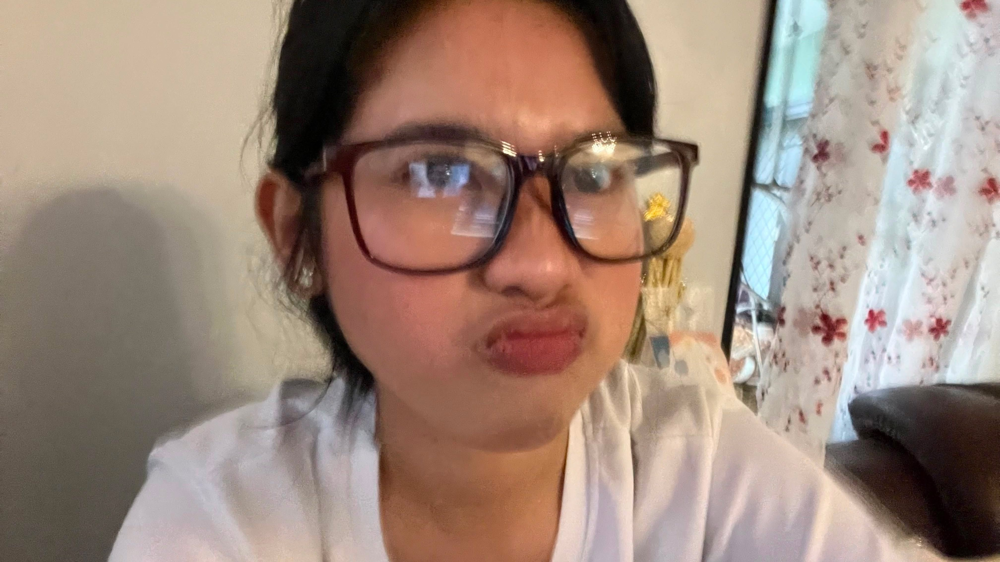
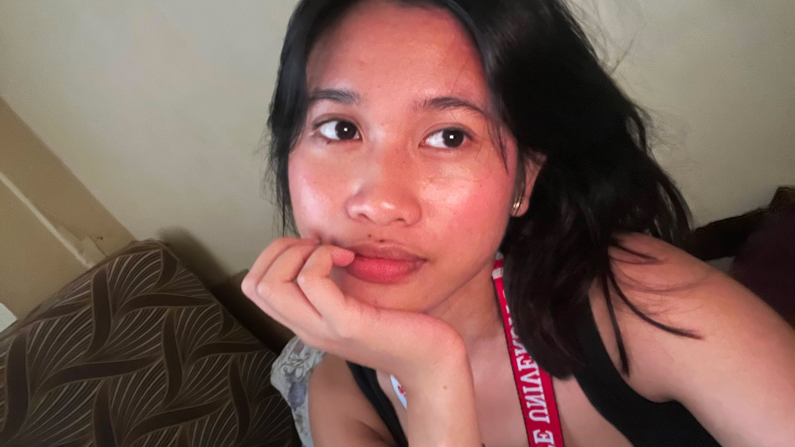
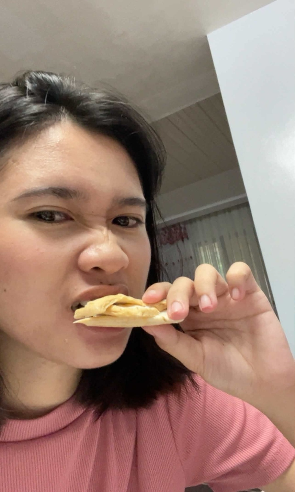
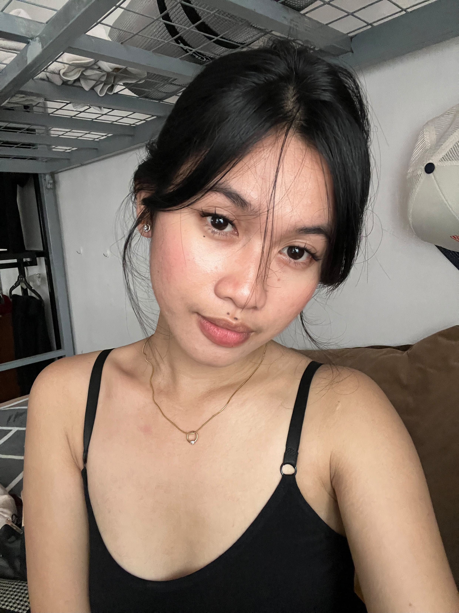
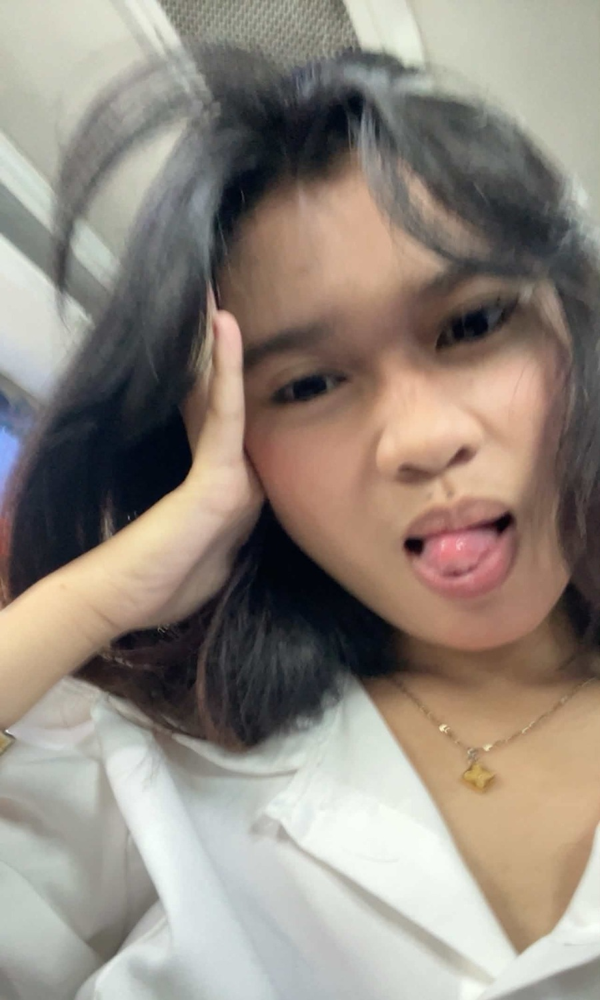
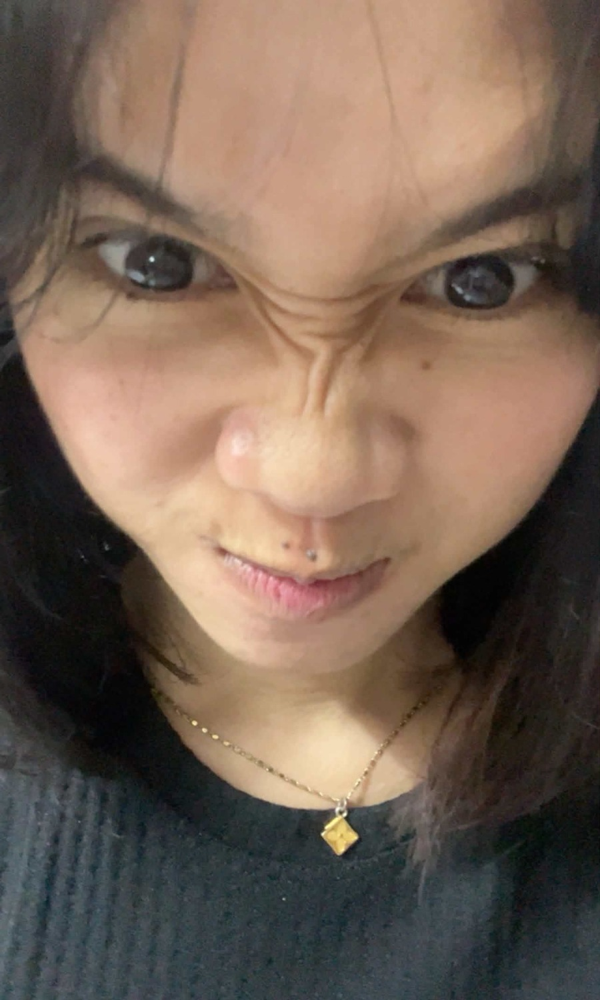
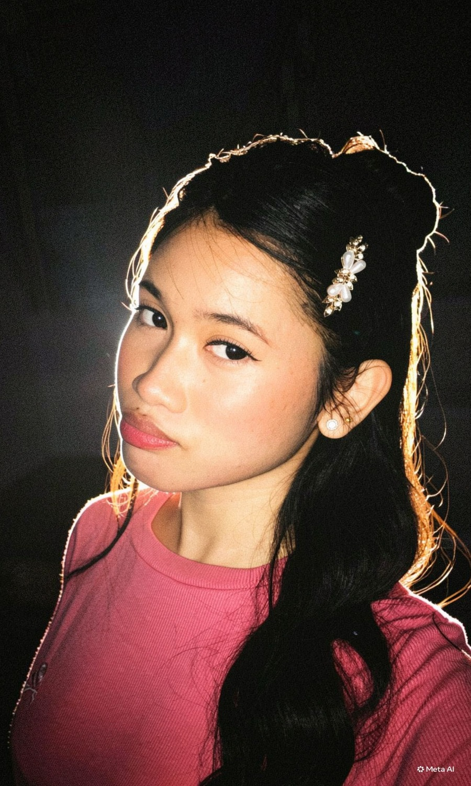
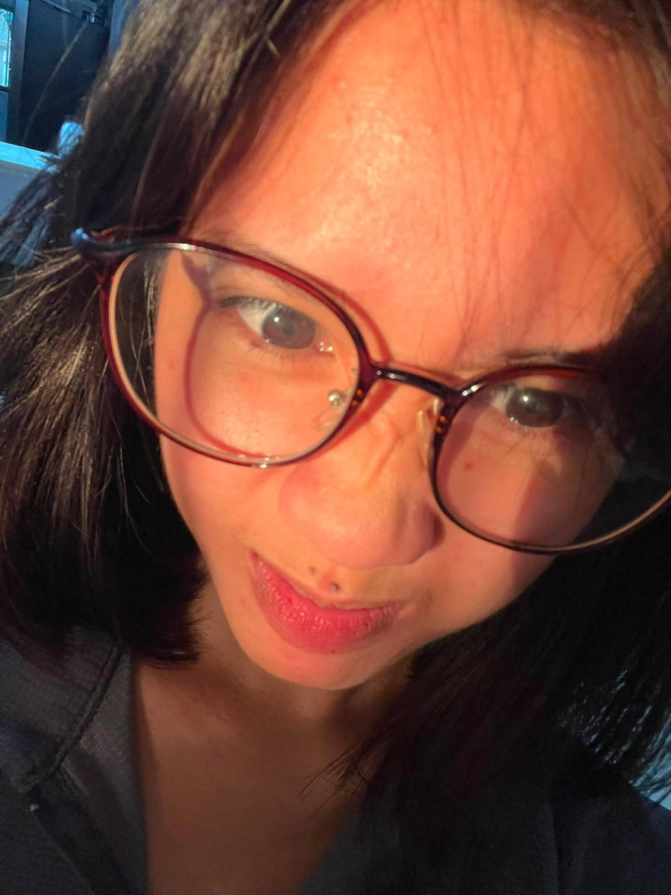
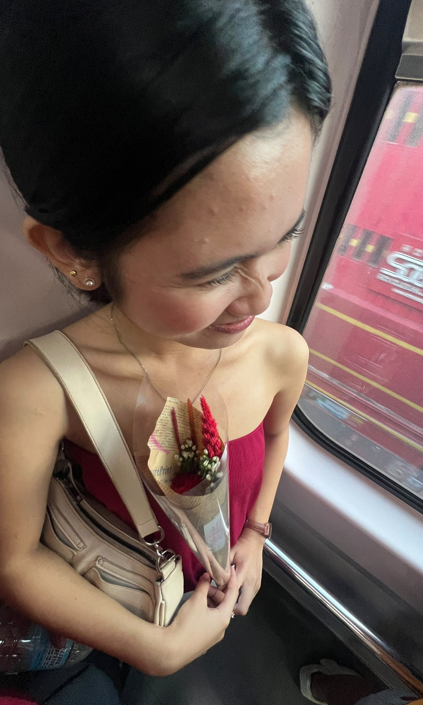
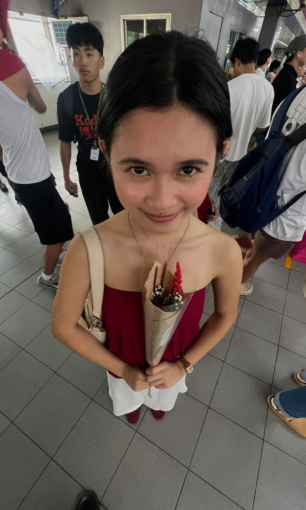

♡
Your heart
I appreciate your kindness, the way you care, and the love you give in your own beautiful way.
I made these little pages for you, bebe. A place for my appreciation of you, the things I adore about you, and all the words I sometimes struggle to say.
(Play the music first bebe)











I appreciate your kindness, the way you care, and the love you give in your own beautiful way.
To think that i have you in my life now is like having a sun that would shine by my side.
The fact that you are exactly who you are, without trying to be someone else, is what makes you so special to me.
Today, tomorrow, and in all the little moments in between. Thank you for being my bebe.
Goodnight Ms.